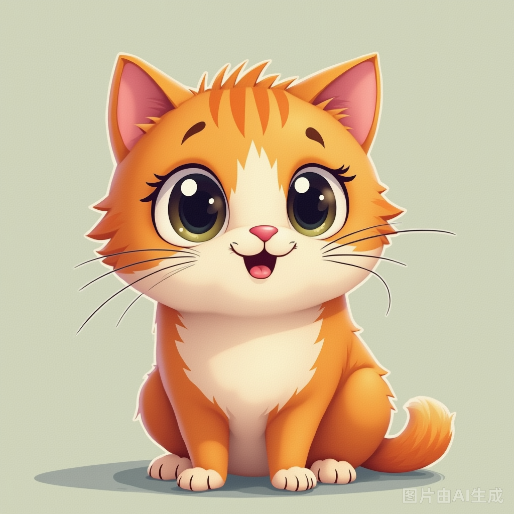
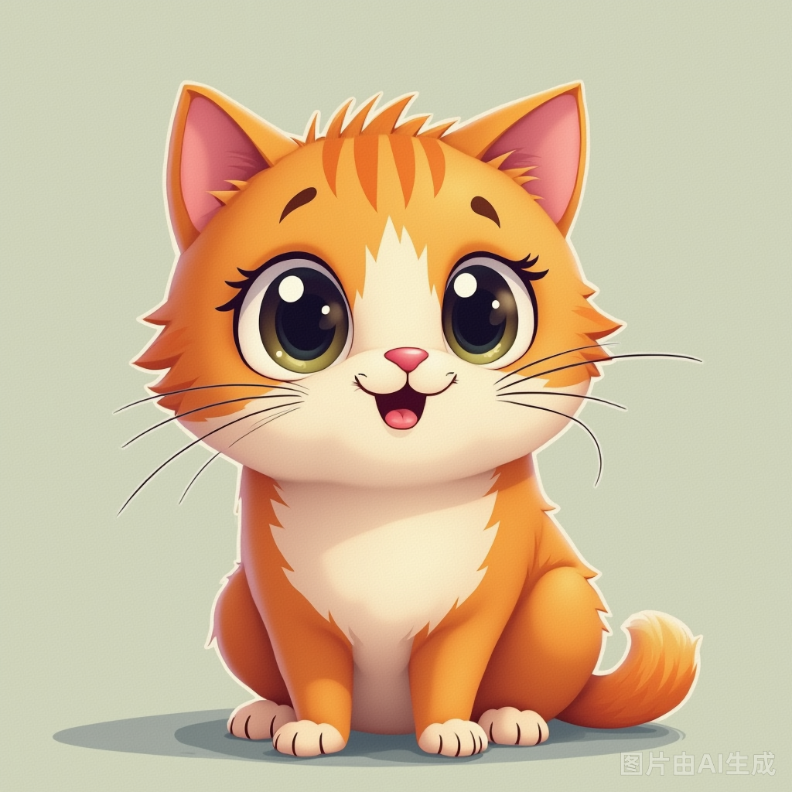

什么是区块链？
区块链是一种去中心化的分布式账本技术，可以安全地记录交易并防止数据被篡改。它被广泛应用于金融、供应链、智能合约等领域。
- 去中心化：没有单一的控制机构
- 安全性高：基于加密算法
- 透明：所有交易公开可查
什么是猫猫币？
猫猫币是一种基于区块链技术的数字货币，以可爱猫咪为主题，旨在打造一个社区友好的生态系统。
猫猫币的特点：
- 高效交易
- 低交易费用
- 支持慈善项目
未来展望
区块链技术和猫猫币正在改变我们的生活方式，从数字支付到虚拟资产管理，它们的潜力不可限量。
探索未来数字货币的世界
区块链是一种去中心化的分布式账本技术，可以安全地记录交易并防止数据被篡改。它被广泛应用于金融、供应链、智能合约等领域。
猫猫币是一种基于区块链技术的数字货币，以可爱猫咪为主题，旨在打造一个社区友好的生态系统。
猫猫币的特点：
区块链技术和猫猫币正在改变我们的生活方式，从数字支付到虚拟资产管理，它们的潜力不可限量。
